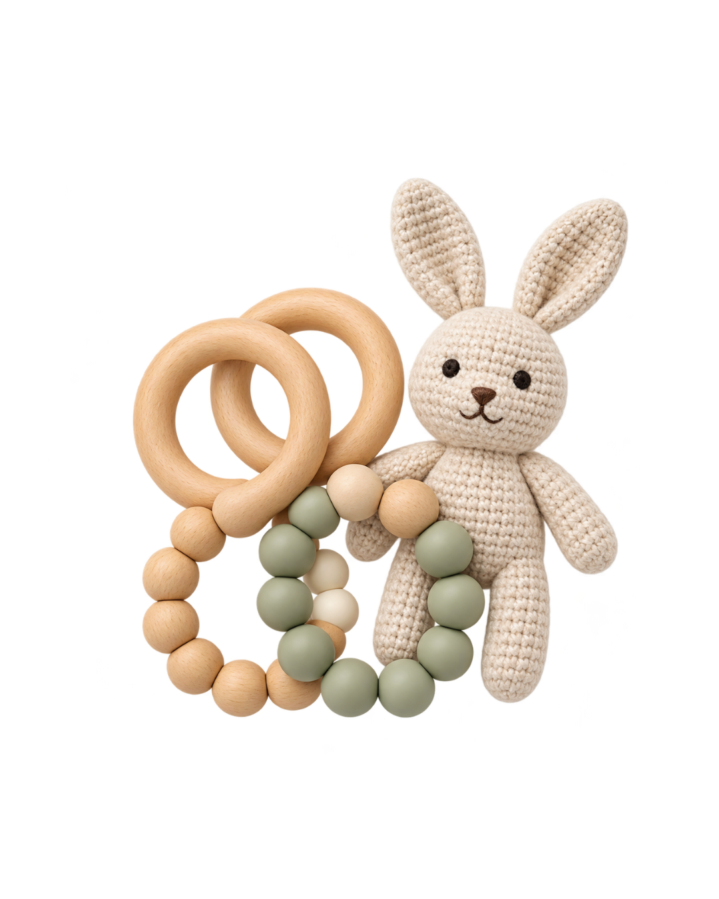

Tilbage til donation
1
Vælg donation
2
Bekræft donation
Bekræft din donation
Du er næsten færdig! Gennemgå oplysningerne, inden du bekræfter.
Din donation

Legetøj til en pige på 2
Afleveringssted
City Shoppen, 5000 OdenseAflever senest
Inden for 7 dageDin donation gør en forskel for et barn og dets familie.
De ting du donerer, får et nyt liv hos familier, der har brug for ekstra støtte i en svær tid.